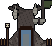
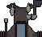
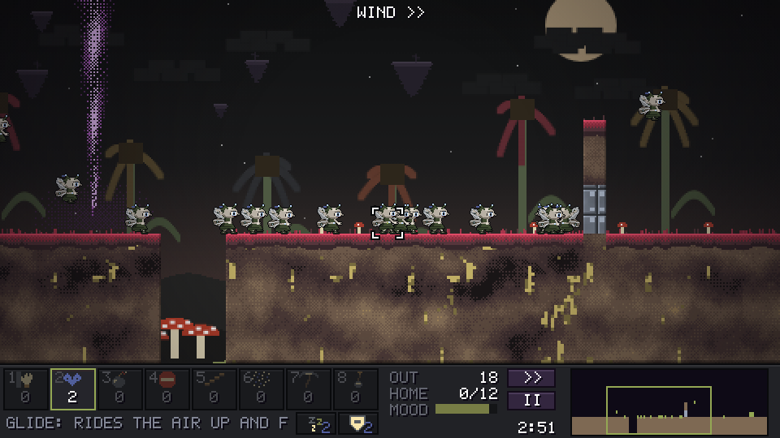
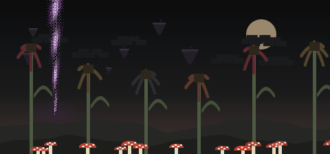

From the journals of the wandering scholar
Of the Fairies
Home: Giant gardenLed by: The Queen (one per coven)Substance: GlimmerClans: Thistlewing and Moonmoth
A Fairy will gladly show you the way out of the garden. It will not say which garden.
The garden is dead, and has been for longer than the trees in it remember. Grey silk hangs in the hollows like washing nobody came back for. The Fairies are smaller than I had been told and considerably less charming.
One hovered at the height of my eye for most of an hour, saying nothing, until I put my iron knife away. Then it laughed and left. This coven had its own Queen. The coven beyond the dead hedge had another, and the two had not agreed on anything in living memory, which for Fairies is not long.
A gust came up near midnight and carried three of them clean over the wall, still arguing. Nobody went after them. I was shown a path out by a cold blue light. It led back into the garden twice.
Fairies form covens, each led by its own Queen, with no evidence that all covens answer to one ruler. Covens cooperate only when their interests align.
They are suspicious and mischievous towards outsiders, and unpredictable rather than hostile: they simply enjoy confusing people.
They are ashen, with tattered moth wings, and live in a dead night garden. Magic is vital to their survival, while iron and wind are real weaknesses.
Not yet settled: whether Fairies live in a garden or a cave, what role the giant moths play, and what a Queen looks like.
As observed in Marching Orders
| In short | Tiny, flighty tricksters |
|---|---|
| Good at | Safe falls, flutter over gaps |
| Bad at | Iron hurts, wind blows them |
| Own skills | Glide (rides the air up and forward), Pixie dust (sends nearby enemies to sleep) |
| Clans | Thistlewing: +1 glide per map; Moonmoth: wind pushes 10% less |


site/img/journal/race-fairy-study.webpIron in the pocket. Not in the hand.
The wings are full of holes and they fly regardless. I have stopped asking how.


site/img/journal/race-fairy-home.webp